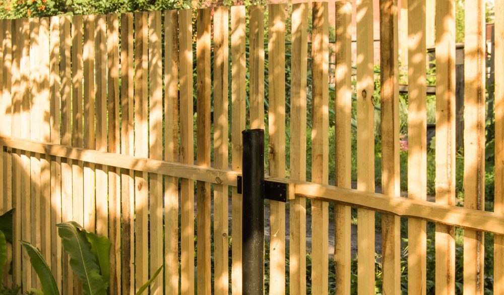
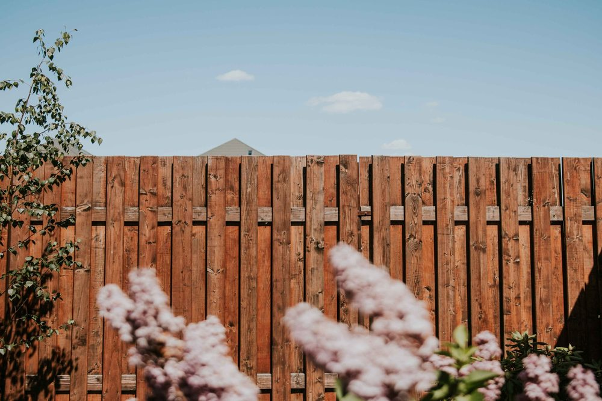

In This Guide
- Wind, saturated soil, and flying debris are what break wood fences in a hurricane, and each has a specific fix.
- Deep concrete-set posts, solid bracing, and a design that lets some wind pass through carry the most weight.
- Keep a short list for the day a storm is coming, and a second list for the moment it passes.
- An old or leaning fence is often better replaced before hurricane season than patched during it.
Living in New Orleans means planning for hurricane season, and a fence is easy to forget on that list. A wood fence is a long line of boards that catches wind, soaks up rain, and can turn into debris when it fails. Preparing it ahead of time is cheaper than repairing it afterward, and it protects your neighbors' yards too.
This guide from Big Easy Fence is built around timing. It covers what to build in before the season, what to do when a storm is on the way, and what to check once it passes, with a focus on the wood fence most homes here have.
Why Wood Fences Struggle in a Hurricane
A hurricane tests a fence in several ways at once, and knowing them helps you fix the right thing.
- Wind load. A solid fence acts like a sail. The stronger the gust, the harder it pushes on the posts.
- Saturated soil. Days of heavy rain soften the ground, so posts that were solid in dry weather can loosen and lean.
- Falling limbs. Branches from nearby trees can crack boards and snap rails.
- Flying debris. Loose items from the yard next door can hit a fence, and a failed fence can become debris for the next property.
- Age. Rot and loose fasteners weaken a fence long before a storm arrives, and the storm just finishes the job.
Before Hurricane Season: Build It Strong
The best time to storm-proof a fence is during a calm stretch. Start with the structure.
Choose Rot-Resistant Wood
Cedar and cypress resist rot and insects better than many other woods, and pressure-treated lumber suits posts and rails. Sound wood holds fasteners better and survives a soaking, which matters when wind and rain arrive together. Our guide to the type of wood fence that lasts the longest compares the options.
Set Posts Deep and in Concrete
Posts do most of the work in a windstorm. Set them deep, commonly around three feet in wind-prone areas, and in concrete. Pressure-treated posts last longer in wet soil. Ask your installer how deep is right for your fence height and soil.

Add Bracing and Strong Fasteners
Angled braces from the post to the fence give extra strength where the wind hits hardest. Use rust-resistant screws or nails, and replace any that have loosened or corroded. See our post on ways to strengthen a fence for more ideas.
Let Some Wind Pass Through
A fence that blocks every bit of wind takes the full force of a gust. Designs with small gaps, such as shadowbox, let some air through and reduce the load on the posts. It is a trade-off with privacy, so pick a style that balances both.

Seal the Wood
A good sealer keeps water out and cuts down on rot, which keeps boards and post bases stronger. Plan to renew it every couple of years or when water stops beading on the surface.
Yard Habits That Protect the Fence
- Prune trees and shrubs. Keep branches trimmed back from the fence so they cannot fall on it or press against it.
- Clear debris. Leaves and clutter that pile up against boards hold moisture and speed rot.
- Secure loose items. Move planters, furniture, and stacked lumber away from the fence line before a storm.
- Consider removable panels. Some fence designs use panels that lift out, and a few owners take them down and store them when a major storm approaches. Ask your installer whether that suits your fence.
When a Storm Is on the Way
- Walk the fence. Look for loose boards, leaning posts, and open gates.
- Close and latch gates. A gate swinging in the wind can tear away its hinges and damage the panel next to it.
- Clear the fence line. Remove anything leaning on the fence or stacked beside it.
- Take photos. Dated pictures of the fence before the storm help you document its condition afterward.
- Stay safe. Do not try to brace or repair a fence once the storm is close. Follow local weather advisories.
After the Storm
Wait until conditions are safe, and treat downed power lines as live. If a line is touching or near a fallen fence, stay back and call the utility company.
Then look over the fence. Check for leaning posts, cracked rails, and boards pushed loose, and photograph any damage. Wet ground may hide problems, so recheck the posts after the soil dries. Small repairs go quickly, and our fence repair team can handle bigger ones.
Repair or Replace Before the Season?
| What You See | What It Usually Means | Best Move |
|---|---|---|
| A few loose boards | Fasteners have worked loose | Repair before the season |
| Soft wood at post bases | Rot in the part that carries the load | Replace the posts |
| A fence leaning in several sections | Posts are failing or the soil is washing out | Reset or rebuild |
| Widespread rot or splitting | The fence is near the end of its life | Replace with a storm-ready design |
A single weak fence can turn into debris in a hurricane. Encourage neighbors to check theirs too, and everyone's yard is safer.
Start Early, Stay Ready
Storm-proofing is a habit, not a single project. Build in strong posts and bracing, keep the wood sealed and trimmed, and run through a short checklist before and after each storm. If your fence is old or already leaning, replacing it before the season is often the smarter move.
To plan a new build or an upgrade, take a look at our residential fencing services or ask for a free estimate.
Common Questions
What Type of Fencing Material Is Most Wind-Resistant?
Can Landscaping Really Help With Storm Resistance?
How Often Should I Check My Fence for Storm Safety?
Are Professional Services Available for Fence Reinforcement?
When Is the Best Time to Prepare a Fence for Hurricane Season?
Want Your Fence Ready for the Next Storm?
Tell us about your fence and we can talk through bracing, post repairs, or a replacement before storm season arrives.